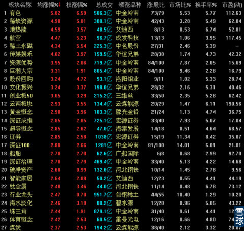
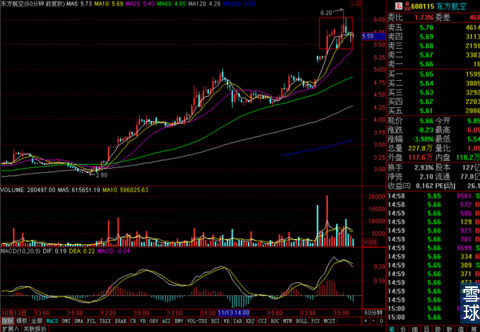
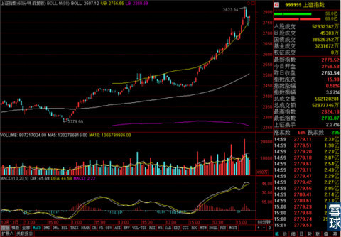
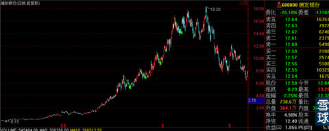

其实一直以来我们都知道，基本面分析下面其实有两大子类，一类是针对公司的财务报表中的业绩。利润等数据进行分析，这种分析适合巴菲特那种忍者神龟式的投资方式，利好和利空对他来说没有影响。另一类就是估值分析，一家公司的业绩摆在那里，那么它的股票到底应该值多少钱？这就要进行估值，这个过程中关于市场和行业的一些消息和政策就很重要了。市场环境好，应该高估一点，市场弱，应该低估一点。那么所有的这些消息和政策，投资者会把他们分成利好的和利空的。但是，利好和利空都是一种解读，就像昨天，我说原因主要是“证监会司局级干部李量被带走，证监银监系统反腐开始”，这个消息在熊市里会被解释成利空的，因为证监会都不干净，那股票的交易的公平性谁来保障？但是在牛市会被解读成利好，因为证监会之前不干净，现在弄干净它，以后股市就靠谱了。
这是人嘴两张皮，正反都有理的事，无论这个消息和这样的解读是否能说服大多数普通投资者，这就是市场主力拉升的依据，只要指数涨上去了，假的也带来了利润，在利润面前，就由不得普通投资者信与不信了。因为你不信市场主力的这种解释，就会错失赚钱的机会。所以在消息是利好还是利空解读面前，普通投资者从来都是被动的。只能选信不信，不能证实它对不对。
这个事就像官渡之战一样，曹操和袁绍为了做空对手，都想尽办法说对方坏话，给自己贴金。尤其是袁绍的檄文直接就动摇了曹操的军心，他们说的话都客观么？正确么？都不是，但是有用！
在股市里什么最有用？调动股民情况和预期的东西就是有用的。所以昨天上涨的关键因素就是市场主力在得之证监会反腐之后，第一时间的反应就是做多，然后把这条消息做正面解读，提升普通投资者参与的信心，用消息印证涨幅，用涨幅说明消息。
在这两者的双重作用之下，吸引股民入市，为进一步的动作做铺垫。
讲完这个例子大家应该对股市里的利好和利空有一个正确的认知了吧？
总之，对待股市里的一切不要用散户思维，要用主力思维。不要看我们自己怎么评判一条消息，而是看主力怎么解释一条消息，同时关注他们这样解释背后的用意。
用散户思维对待股市是和主力掰腕子，用主力思维对待股市是搭顺风车。我这么说大家能理解吧？
回到今天的盘面，今天的走势印证了之前的几个猜想，
第一，连续的上涨趋势出现之后，上涨出现强大惯性的情况下，一般不会出现V字型反转，所以见涨停而急于清仓，在熊市有时候是对的，在牛市里往往是错的。
第二，沪港通开通之后，这边的消息就落地了，同时提起来的是对深港通的预期，所以短期内，沪强深弱会转变成深强沪弱。之前提示大家多关注深市现在来看是对的。
第三，板块轮动是必然要发生的，今天的有色和煤炭走势证实了这个道理。

所有持有底部启动初期股票的小伙伴，如果时间和精力有限，就不要随意调仓换股，耐心等一等就好。持有高位横盘股票的，保持一定警惕，轮动就是高位的下来一些，低位的上去一些，之后位置互换再来一次又一次。所以高位横盘在下次轮动中可能会受一点损失。
操作上我自己今天在尾盘把昨天抢进去的证券B卖出了，因为这笔钱是减仓交通银行得来的，只是短线做一下，这样的涨幅到达甚至超过了我的预期。同时没封住涨停的情况下，我不打算久留。
其它的东方航空和海南航空在今天上午红盘变绿盘的过程中各减仓三分之一，

原因是60分钟线上，MA5和MA10出现一定程度的弯折，但是日线还好，所以暂时出一点。之后看MA20的情况而定，如果有效跌破MA20，就离场走人。如果MA20支撑有效，就再加回到原来的仓位上去。
银华锐进虽然出现冲高回落，但是留待观察，暂不操作。
我知道现在连续的大涨已经让一些新入市的小伙伴有点惊慌和坐不住了，这种情况很正常，没什么大错，也不用纠结。可以像我一样，每次三分之一的进行减仓。毕竟只有经历过一次完整的牛熊市才能对市场有正确的认识。所以大家不要过度在意太小的利润波动。
大盘虽然今天振幅很大，同时换手率比较高，不过60分钟线上轨还没丢。
明天继续盯着上轨做判断就可以了。

当然之前的都是对短线投资者说的，对于想清楚要做中长线的投资者，只要你们不在意上涨过程中这种10-20%的恐怖回调的话，那就一直保持持有状态。

等到了最后关头，做大头部的时候，我觉得我们在一起应该能研究出来是不是该走的，所以放心持有没问题。
 |
其实一直以来我们都知道，基本面分SaiLv 2014-12-03 19:27:18 |
Copyright © 1996-2014 SINA Corporation All Rights Reserved.